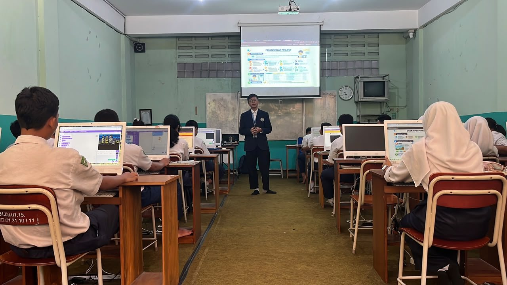
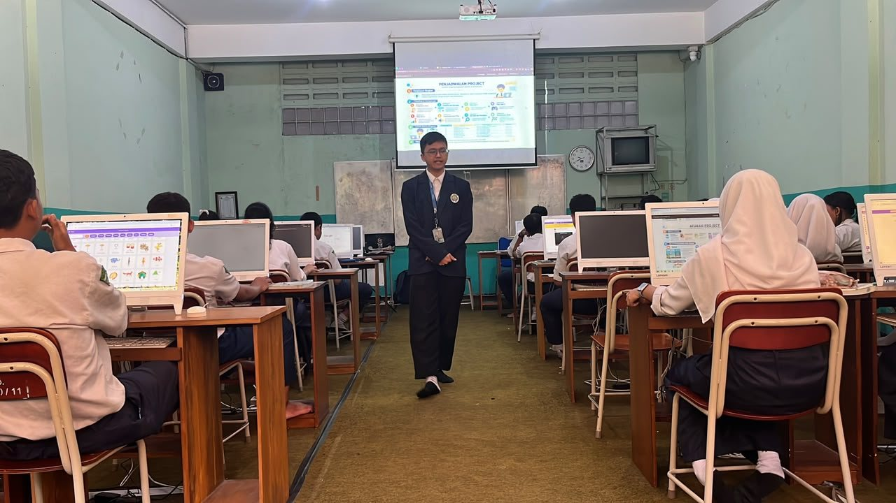
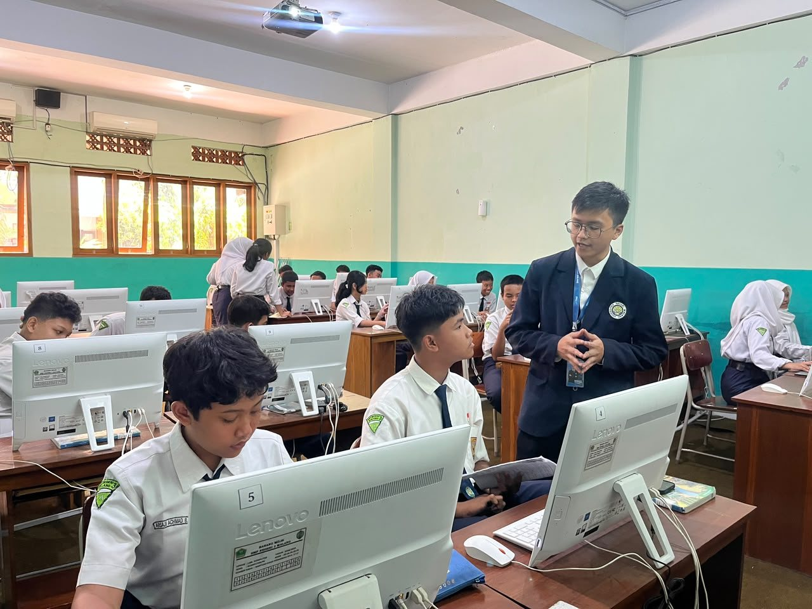
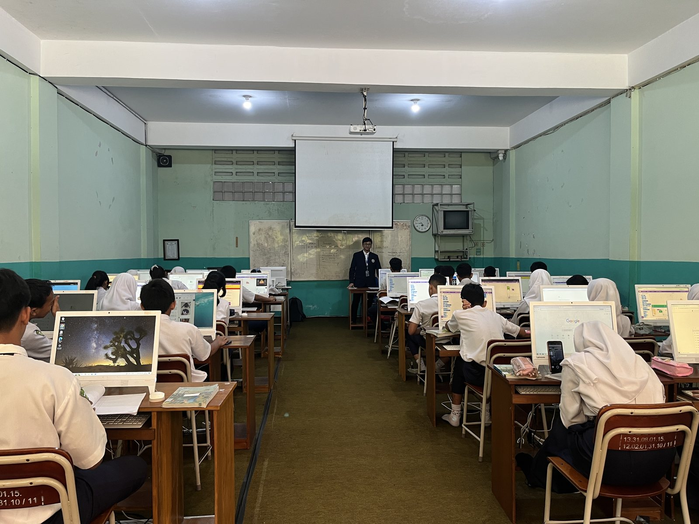
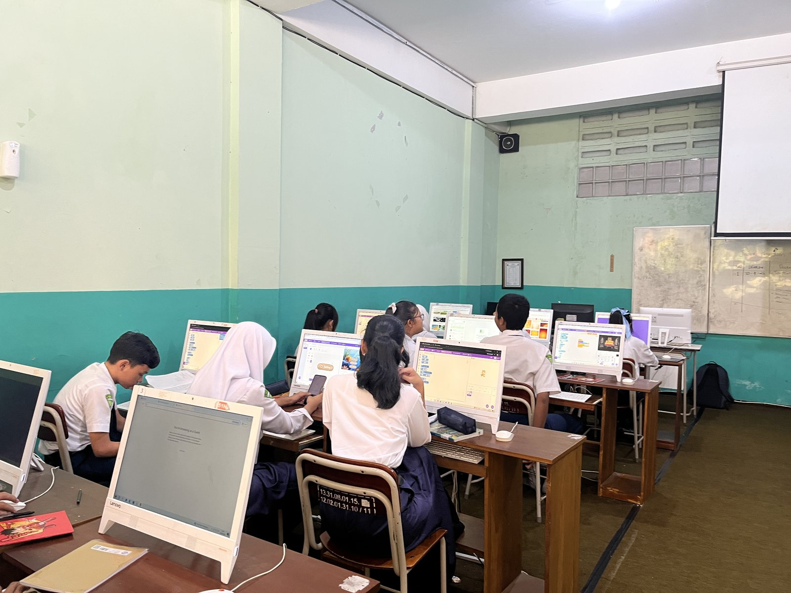
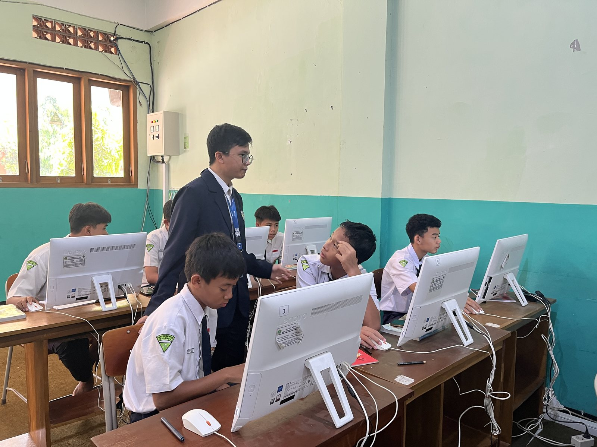

Menentukan ide proyek
Peserta didik mengembangkan judul, jenis, deskripsi, keunikan, serta kebutuhan proyek agar gagasan awal lebih terarah.
Bagian ini mendokumentasikan proses perencanaan proyek Scratch, pemantauan perkembangan berdasarkan target masing-masing peserta didik, serta pergeseran peran guru dalam kegiatan kokurikuler Malang Heritage.
Siklus 2 mengarahkan peserta didik untuk mengubah minat dan gagasan menjadi rancangan proyek yang dapat dikerjakan. Setiap peserta didik menyusun identitas proyek, tujuan, deskripsi, keunikan, kebutuhan, dan target mingguan.
Peserta didik mengembangkan judul, jenis, deskripsi, keunikan, serta kebutuhan proyek agar gagasan awal lebih terarah.
Rencana kerja dilanjutkan melalui pembagian komponen dan target. Aktivitas Bingo Scratch digunakan sebagai penguatan konsep secara interaktif.
Peserta didik menyempurnakan urutan pekerjaan dan target mingguan sebagai acuan ketika proyek mulai dikembangkan.
Kompilasi pembelajaran P7 pada 15 September 2026, berdurasi 12 menit 26 detik.
Setelah doa dan salam, guru membuka kegiatan pembelajaran dan mengarahkan kelas untuk memulai kegiatan.
Guru mengecek kehadiran sebelum melanjutkan pembelajaran.
Guru meminta peserta didik di bagian belakang untuk memperhatikan. Momen ini menunjukkan pengelolaan perhatian kelas sebelum materi disampaikan.
Guru mulai memasuki kegiatan pendahuluan dengan menyampaikan tujuan yang ingin dicapai pada pertemuan tersebut.
Guru mengingatkan kembali kegiatan sebelumnya, yaitu menyusun deskripsi proyek, sebagai pijakan untuk melanjutkan perencanaan proyek.
Guru menguraikan deskripsi proyek sebagai dasar bagi peserta didik untuk memahami pekerjaan yang akan mereka kembangkan.
Guru menyampaikan ketentuan yang berlaku bagi seluruh proyek, kemudian menjelaskan aturan yang disesuaikan dengan jenis proyek masing-masing.
Guru menjelaskan jadwal proyek selama delapan minggu, termasuk milestone atau target setiap minggu serta cara proyek akan dinilai. Penjelasan ini memberi gambaran tentang tahapan kerja dan ekspektasi capaian.
Guru bergerak mengelilingi kelas dan memberikan pengarahan lebih lanjut kepada peserta didik setelah penjelasan klasikal.



Refleksi perencanaan proyek, target realistis, dan umpan balik.
Buka refleksi ↗Target yang dibuat sendiri membantu peserta didik menghubungkan proyek dengan minatnya dan memberi acuan yang lebih personal untuk memantau pekerjaan.
Bingo Scratch memberi variasi aktivitas untuk mengingat kembali konsep pemrograman tanpa menjadikan seluruh sesi sebagai penjelasan satu arah.
Target perlu dibuat spesifik dan realistis. Jadwal juga perlu dipahami sebagai urutan kerja, bukan sekadar tabel administrasi yang dapat diubah tanpa penjelasan.
Pada Siklus 3, perhatian bergeser dari perencanaan menuju pelaksanaan. Perkembangan peserta didik dipantau dengan membandingkan pekerjaan aktual terhadap target pada jadwal masing-masing, disertai pemeriksaan implementasi, pengujian, dan pemecahan masalah.
Peserta didik mulai mengimplementasikan bagian proyek, menguji hasil, memperbaiki kesalahan, dan mencatat perkembangan.
Pemantauan diteruskan dengan menggunakan Modul Ajar Pertemuan 9 sebagai rujukan pembelajaran setelah P9.
Keberhasilan mingguan dilihat berdasarkan rencana individual, dengan mempertimbangkan perubahan yang dijelaskan dan kemajuan yang benar-benar ditunjukkan.
Pengembangan proyek Scratch dan pemantauan progres. Modul ini juga menjadi rujukan untuk pertemuan setelah P9.
Buka modul ↗Refleksi pelaksanaan P9 dan P10, pendampingan, debugging, dan penyesuaian target.
Buka refleksi ↗Kompilasi ini bergerak dari peninjauan rencana kerja menuju pemeriksaan kemajuan, lalu pendampingan pada persoalan teknis yang muncul ketika proyek mulai diterapkan.
Guru membimbing peserta didik membaca dan menggunakan jadwal sebagai acuan pekerjaan. Tahap ini menghubungkan rencana yang telah dibuat pada Siklus 2 dengan kegiatan implementasi.
Guru memeriksa progres peserta didik dan membandingkannya dengan target yang telah disusun. Pemantauan berfokus pada pekerjaan yang benar-benar sudah dilakukan, bukan hanya jadwal tertulis.
Pendampingan berlanjut pada logika menu utama serta pengaturan sprite agar dapat disembunyikan atau ditampilkan. Cuplikan ini memperlihatkan pergeseran dari perencanaan menuju penyelesaian persoalan implementasi.



Rekaman terpilih menampilkan P9 pada 29 September 2026. P10 pada 6 Oktober melanjutkan pembelajaran dengan menggunakan modul P9.
Rubrik tertulis. Modul P9 memuat rubrik pemantauan formatif dengan lima aspek berskala 1–4: perkembangan proyek, implementasi pemrograman, pengujian/debugging, pemecahan masalah, serta dokumentasi/refleksi. Modul tersebut juga membedakan penilaian progres mingguan dari penilaian produk akhir setelah pengembangan selesai.
Dalam praktik, indikator pada rubrik tertulis tidak diterapkan sebagai perhitungan mekanis pada setiap pertemuan. Penilaian dilakukan secara fleksibel dengan menjadikan target dan jadwal kerja individual sebagai acuan utama.
Pekerjaan dibandingkan dengan target mingguan peserta didik. Perubahan rencana dapat dipertimbangkan apabila alasannya jelas dan kemajuan yang dikerjakan dapat diperlihatkan.
Guru memeriksa pekerjaan secara langsung dan menggunakan pertanyaan atau kuis lisan ketika diperlukan. Peserta didik yang memperoleh dispensasi tetap diperiksa progres dan pemahamannya.
Kesepakatan kelas, kesiapan membawa bahan belajar, dan kepatuhan terhadap jadwal proyek turut menjadi catatan dalam pelaksanaan penilaian.
Refleksi konsistensi penilaian. Penerapan yang fleksibel membantu mengakomodasi karakteristik proyek dan kondisi peserta didik. Dalam pelaksanaannya, beberapa kesepakatan kelas juga memiliki konsekuensi nilai yang telah disampaikan sebelumnya, seperti pengurangan satu tingkat nilai untuk perilaku yang mengganggu teman dan nilai C ketika bahan belajar wajib tidak dibawa atau hilang. Ketepatan melaporkan target mingguan turut diperhatikan; perubahan jadwal perlu dijelaskan secara terbuka, bukan dengan mengubah label minggu. Catatan tersebut menunjukkan bahwa nilai pada rekap tidak sepenuhnya menggambarkan penguasaan pemrograman. Pada pelaksanaan berikutnya, capaian proyek, pemahaman konsep, kesiapan belajar, dan kedisiplinan perlu dicatat secara terpisah agar interpretasi nilai lebih jelas dan konsisten.
Rekap pemantauan. Rekap yang tersedia mencakup dua minggu awal pengembangan proyek. Bagian ini berfokus pada pelaksanaan monitoring dan asesmen formatif; penilaian produk akhir tidak dibahas karena rekap hasilnya belum tersedia.
Kegiatan kokurikuler berlangsung pada 12–23 Oktober 2026. Refleksi Siklus 4 mendokumentasikan pelaksanaan pada 13 dan 20 Oktober, dengan tema proyek Malang Heritage yang menghubungkan eksplorasi budaya lokal dengan produksi karya kelompok.
Rentang pelaksanaan kegiatan kokurikuler yang menjadi konteks Siklus 4.
Peserta didik menerima gambaran proyek Malang Heritage, mendiskusikan gagasan dalam kelompok, lalu mempresentasikan konsep hasil diskusi.
Kelompok mengembangkan ensiklopedia, video, dan media pameran kelas sebagai bentuk persembahan bertema warisan lokal.
Dokumentasi refleksi kegiatan kokurikuler Malang Heritage dan peran guru sebagai fasilitator.
Buka refleksi ↗Klip 13 dan 19 Oktober menjadi sumber kompilasi aktivitas kelompok, diskusi konsep, presentasi, dan produksi karya.
Lihat kompilasi video ↗Video, ensiklopedia, dan dekorasi kelas memberi beberapa bentuk representasi hasil belajar dan membuka ruang bagi pembagian peran dalam kelompok.
Peserta didik terlibat dalam perumusan konsep, penyampaian gagasan, dan pengerjaan produk secara berkelompok. Rangkaian ini memberi ruang bagi mereka untuk mengatur pekerjaan dan mengembangkan karya bersama.
Tema lokal memberi konteks nyata bagi peserta didik untuk mengolah informasi dan menyampaikan gagasan melalui karya yang dapat dilihat bersama.
Montase merangkum rangkaian aktivitas peserta didik: pengenalan proyek, diskusi dan presentasi gagasan, serta pengembangan beberapa bentuk karya. Dokumentasi menonjolkan partisipasi, kolaborasi, dan kemandirian kelompok selama proses tersebut.
Guru menjelaskan bahwa kelas IX akan menyiapkan persembahan Malang Heritage melalui tiga bentuk karya: ensiklopedia, video, dan pameran kelas. Cuplikan ini memberi konteks dan tujuan bersama sebelum peserta didik mulai bekerja dalam kelompok.
Peserta didik berdiskusi dan bertukar gagasan dalam kelompok sebagai bagian dari perumusan konsep proyek.
Perwakilan kelompok memaparkan hasil pembahasan konsep. Presentasi menjadi penghubung antara tahap perumusan gagasan dengan pekerjaan produksi yang dilakukan pada tahap berikutnya.
Peserta didik bekerja dalam kelompok untuk membuat ensiklopedia, video, dan media pendukung pameran kelas yang direncanakan berlangsung pada hari Kamis. Rangkaian ini menonjolkan aktivitas produksi dan kemandirian kelompok dalam menyelesaikan bagian pekerjaan masing-masing.
Montase menggabungkan pengenalan proyek, diskusi, presentasi konsep, dan proses produksi karya.
Prinsip yang saya bawa ke pembelajaran Informatika adalah bahwa guru tidak cukup mengajarkan fitur teknologi atau menilai produk akhir. Pembelajaran perlu berangkat dari kondisi peserta didik, menuntun proses berpikir, menghidupkan nilai dan tanggung jawab digital, serta memberi ruang untuk mencoba, menerima umpan balik, dan memperbaiki pekerjaan. Media dan teknologi dipilih karena mendukung tujuan belajar, bukan semata-mata karena kebaruannya.
Jadwal delapan minggu membantu peserta didik memecah proyek menjadi pekerjaan yang lebih terukur. Target tetap perlu ditinjau agar sesuai dengan kompleksitas proyek dan waktu yang tersedia.
Memeriksa proses, debugging, dan penjelasan peserta didik memberi gambaran yang lebih kaya daripada hanya menghitung fitur yang selesai.
Penggunaan kriteria capaian proyek yang transparan dan pemisahan catatan sikap/kesiapan belajar akan meningkatkan konsistensi serta keadilan penilaian.
Refleksi profesional dan tindak lanjut. PPL memperkuat pemahaman bahwa pembelajaran Informatika perlu menilai cara peserta didik memahami masalah, memilih langkah, menguji, dan memperbaiki solusi, bukan hanya memeriksa apakah produk telah selesai. Peran guru juga berubah mengikuti kebutuhan kegiatan: memberi pijakan konsep, membimbing persoalan teknis, memantau target, lalu memfasilitasi kerja kolaboratif. Pada praktik berikutnya, saya perlu mencatat perkembangan secara berkala, memisahkan capaian proyek dari pemahaman konsep serta kesiapan belajar, dan menjaga agar kriteria penilaian maupun umpan balik dapat dipahami peserta didik. Pendampingan juga perlu memberi ruang bagi mereka untuk menjelaskan keputusan dan memperbaiki pekerjaan tanpa kehilangan tanggung jawab atas targetnya.